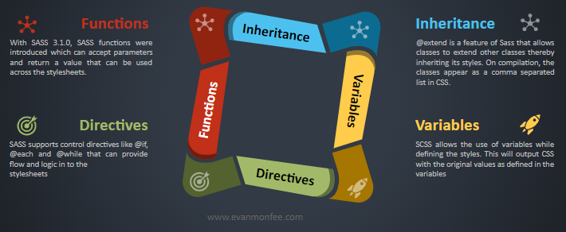

SASS (which stands for Syntactically Awesome Style Sheets) is an extension to CSS. It contains all the basic functionality of CSS while also super-charging it further with several other features.
SASS brings in the concepts of object-oriented stylesheets into place with variables, conditionals, inheritance, and methods. Therefore, it makes more sense and is easier to adopt for those with an object-orient programming background.
Is it SASS or SCSS?
Simple answer - Both!
There are two syntax available for Sass which further leads to two stylesheet extensions - .scss and .sass
The first, known as SCSS (Sassy CSS) is the newer syntax and as the name indicates is basically an extension of CSS. In other words, every valid CSS stylesheet is also a valid SCSS stylesheet. They have the extension of .scss
The second syntax, unlike CSS uses indentation to denote nesting and is also referred to as the 'indented syntax' (or sometimes just "Sass"). Files using this syntax have the .sass extension.
Object oriented you say?

-
Variables:
-
Inheritance:
-
Control Directives:
-
Functions:
SCSS allows the use of variables while defining the styles. This will ouput CSS with the original values as defined in the variables. SASS supports the following 4 datatypes: 1. Numbers 2. Strings 3. Colors 4. Boolean
body {
color: $colorTextBody;
text-align: center;
margin: auto;
font-size: $fontBody;
font-family: $fontFamily;
padding: $spacingLg;
}
body {
color: #000;
text-align: center;
margin: auto;
font-size: 14px;
font-family: "Open Sans";
padding: 15px;
}@extend is a feature of Sass that allows classes to extend other classes thereby inheriting its styles. On compilation, the classes appear as a comma separated list in CSS as shown below:
.btn-primary{
color: $colorTextButton;
padding: $spacingMd;
cursor: pointer;
text-transform: uppercase;
}
.btn-secondary{
@extend .cloBtnPrimary;
color:$colorBlack;
}
.btn-primary,
.btn-secondary {
color: #FFF;
padding: 15px;
cursor: pointer;
text-transform: uppercase;
}
.btn-secondary {
color: #000;
}SASS supports control directives like @if, @each and @while that provide flow and logic in the stylesheets.
$footerRequired: true;
.footer-container{
@if ($footerRequired) {
background-color: darken($colorBackground, 10%);
color: $colorTextBody;
padding: $spacingMd;
}
@else {
display:none;
}
}With SASS 3.1.0 functions was introduced that can accept parameters and return a value which can be used across the stylesheets. The output of a functions will be a single value and not a rule..
@function getWidth ($percent) {
@return 100% / $percent
}
width: getWidth(2);Okay, so what is the downside?
Before you jump right to it and start migrating your code, consider the following:
- Pre-processor dependent (i.e.) code has to be compiled first.
- WYSIWYG Chrome: Styles cannot be added from Chrome Inspector tools. Using CSS, Chrome Inspector tools acts more like an WYSIWUG editor with effects of style changes seen immediately. When using SASS in the application, the styles will have to be first added as CSS in Chrome, tested, and later on added as SASS styles to the application and verified again. While this isn't much, it might need some getting used to if you use Chrome as a WYSIWYG tool for styles development.
Posted on: January 20, 2019